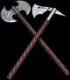
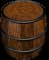
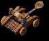
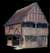

Un seigneur à la possibilité d'augmenter ses connaissances dans différents domaines. L'étude des sciences est réalisée par des sages, cela demande des ressources monétaires importantes. Pour augmenter d'un niveau dans un domaine scientifique, on doit débourser la somme requise afin d'atteindre le niveau suivant.
Il existe huit domaines scientifiques.
Tactique

Logistique

Furtivité
Commerce
Balistique

Mysticisme
Agriculture
Ébénisterie
